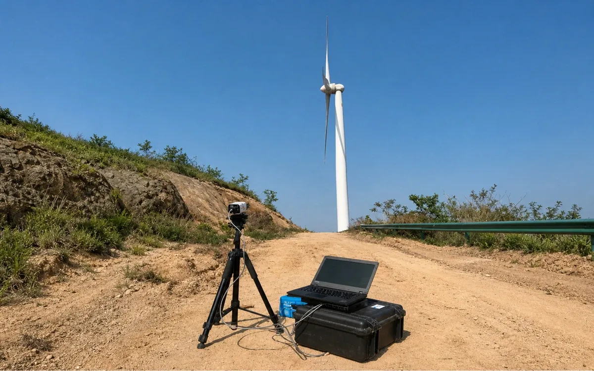

Diagnosing Wind Turbine Rotor Imbalance: Mass, Aerodynamic and Yaw-Related Causes
A rotor with three blades that are not quite alike will shake the turbine once per revolution. Small differences are normal; larger ones raise loads on the main bearing, gearbox and tower, and can shorten component life. This article explains the causes of rotor imbalance and how engineers diagnose it in the field.
What rotor imbalance is
An ideal rotor has three blades with identical mass, mass distribution and aerodynamic behaviour. Any difference produces a force that rotates with the rotor. Because it repeats once per revolution, it shows up at the rotational frequency, often called 1P, in vibration data.
Mass imbalance
Mass imbalance comes from uneven weight: manufacturing tolerance, water or debris trapped inside a blade, ice on one blade, or a repair that added material. It mainly creates a radial force in the rotor plane.
Aerodynamic imbalance
Aerodynamic imbalance comes from blades producing different lift. The most common cause is a pitch angle offset between blades, often from installation or encoder errors. Leading-edge erosion, damage or differing surface condition can also contribute. It tends to cause axial and torsional vibration, and differences in how far each blade bends towards the tower.
| Type | Typical causes | Main signature |
|---|---|---|
| Mass | Water ingress, ice, repairs, manufacturing variation | Lateral 1P vibration |
| Aerodynamic | Pitch offset, erosion, damage, twist differences | Axial/torsional 1P vibration, blade deflection differences |
| Yaw-related asymmetry | Persistent yaw misalignment | Cyclic load asymmetry, power loss |
Symptoms operators notice
- Rising 1P vibration levels in condition monitoring data.
- One turbine vibrating more than identical neighbours in similar wind.
- Different blade-to-tower clearance for each blade.
- Unusual noise or visible wobble at certain speeds.
None of these alone proves imbalance, which is why a structured diagnosis is useful before sending a crew up-tower.
Diagnostic methods
Vibration analysis
Accelerometers in the nacelle measure vibration. Analysing the spectrum at 1P, and comparing directions, gives the first indication of whether imbalance is mass-related or aerodynamic. Background on the method is available from general condition monitoring references.
Optical pitch and blade measurement
Photographs or laser measurements of the blades at standstill or in rotation can reveal pitch angle differences between blades. Correcting a pitch offset is often the single most effective fix for aerodynamic imbalance.
Video-based rotor assessment from the ground
A camera on the ground can record the rotor in operation. Processing the video derives rotor speed and compares how each blade passes the tower, indicating aerodynamic differences without stopping the turbine.

The WIT-RB20 rotor imbalance detection kit takes this approach: a ground camera and portable processing host evaluate clearance variation, rotor speed and aerodynamic imbalance, then export a Word report. Its documentation lists 20 cm specified clearance accuracy, a 0–20 m clearance measurement range and 6 h self-powered operation, with performance dependent on camera position, yaw, image stability and visibility.
A practical diagnostic sequence
- Screen with data: compare 1P vibration across turbines of the same type.
- Rule out yaw issues: check yaw alignment, since asymmetric inflow can confuse results.
- Assess from the ground: record the rotor to compare blade behaviour and clearance.
- Check pitch: measure blade pitch angles if aerodynamic imbalance is indicated.
- Inspect blades: look for water ingress, damage or erosion if mass imbalance is suspected.
- Correct and verify: adjust pitch or balance, then repeat the measurement.
Why fixing imbalance pays off
Imbalance increases fatigue loads across the drivetrain and structure and can reduce energy capture. Because many causes, such as pitch offsets, are cheap to correct once identified, diagnosis is usually the step that delivers the most value.
Rotor assessment is one of the six systems presented by WindInspectTech, where each value is shown together with its source conditions.
Keeping a baseline
Diagnosis is far easier with a reference. Record vibration levels, blade pitch angles and ground-based rotor measurements soon after commissioning or after major work such as a blade replacement. When symptoms appear later, comparing against that baseline shows what changed, instead of guessing from a single snapshot.
Seasonal effects deserve attention too. Ice, temperature and air density all shift rotor behaviour, so compare measurements taken under similar conditions. If a blade shows recurring mass imbalance after cold periods, water ingress and freezing inside the blade may be worth investigating with an internal inspection.
When a correction is made, such as a pitch adjustment or balancing weight, repeat the same measurement under similar conditions. A before-and-after record proves the fix worked and becomes the new baseline.
Frequently asked questions
What is the difference between mass and aerodynamic imbalance?
Mass imbalance comes from uneven weight distribution, such as water ingress or repairs. Aerodynamic imbalance comes from blades producing different lift, often due to pitch angle offsets or profile damage.
What symptoms suggest rotor imbalance?
Vibration at the rotor rotational frequency (1P) in the nacelle or tower, increased loads, unusual noise, and differences in blade-to-tower clearance between blades.
Can imbalance be found without climbing the turbine?
Often, yes. Vibration data from the condition monitoring system and ground-based video of the rotor can indicate imbalance and help target any later climb.
Is yaw misalignment a form of imbalance?
Not strictly, but it produces asymmetric loads on the rotor and can mask or mimic imbalance symptoms, so it is usually checked alongside.
Contact
Seeing unexplained vibration or blade-to-blade differences on a turbine? Share the symptoms and turbine type and we can discuss a field assessment. Email sales@windinspecttech.com or visit the WindInspectTech contact page.